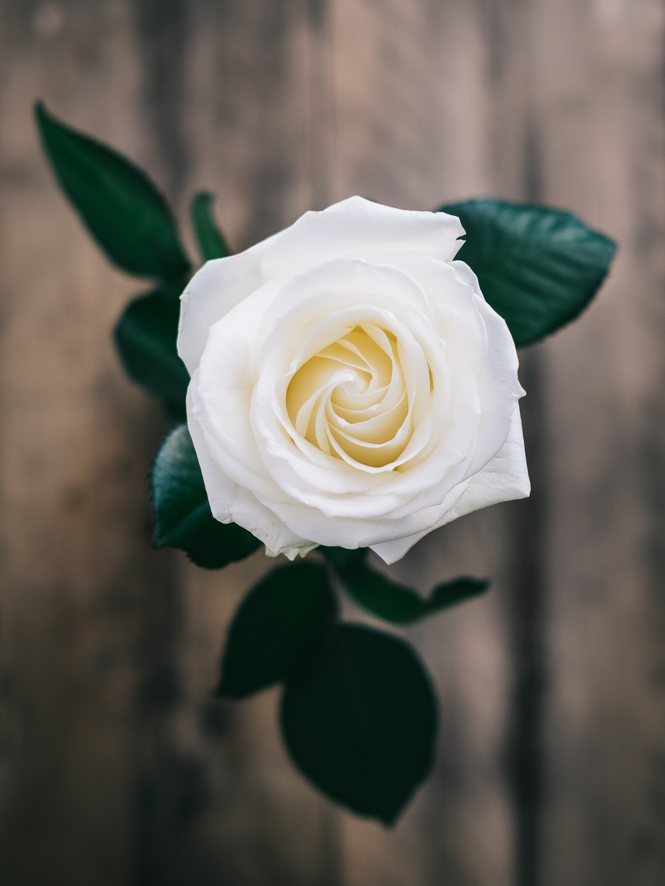

Flowers
- 
-

-

Sunflower
The common sunflower (Helianthus annuus) is a large annual forb of the genus Helianthus grown as a crop for its edible oil and edible fruits.
This sunflower species is also used as wild bird food, as livestock forage (as a meal or a silage plant), in some industrial applications, and as an ornamental in domestic gardens.
The plant was first domesticated in the Americas. Wild Helianthus annuus is a widely branched annual plant with many flower heads. The domestic sunflower, however, often possesses only a single large inflorescence (flower head) atop an unbranched stem.
Sunflower seeds were brought to Europe from the Americas in the 16th century, where, along with sunflower oil, they became a widespread cooking ingredient.
Rose
A rose is a woody perennial flowering plant of the genus Rosa, in the family Rosaceae, or the flower it bears. There are over three hundred species and tens of thousands of cultivars. They form a group of plants that can be erect shrubs, climbing, or trailing, with stems that are often armed with sharp prickles.
Their flowers vary in size and shape and are usually large and showy, in colours ranging from white through yellows and reds. Most species are native to Asia, with smaller numbers native to Europe, North America, and northwestern Africa.
Species, cultivars and hybrids are all widely grown for their beauty and often are fragrant. Roses have acquired cultural significance in many societies.
Rose plants range in size from compact, miniature roses, to climbers that can reach seven meters in height. Different species hybridize easily, and this has been used in the development of the wide range of garden roses.
Daisy
Bellis perennis, the daisy, is a European species of the family Asteraceae, often considered the archetypal species of the name daisy. To distinguish this species from other plants known as daisies, it is sometimes qualified as common daisy, lawn daisy or English daisy.
Historically, it has also been widely known as bruisewort, and occasionally woundwort (although the common name "woundwort" is now more closely associated with the genus Stachys).
Bellis perennis is native to western, central and northern Europe, including remote islands such as the Faroe Islands, but has become widely naturalised in most temperate regions, including the Americas and Australasia.
Poppy
A poppy is a flowering plant in the subfamily Papaveroideae of the family Papaveraceae. Poppies are herbaceous plants, often grown for their colourful flowers.
One species of poppy, Papaver somniferum, is the source of the narcotic drug opium which contains powerful medicinal alkaloids such as morphine and has been used since ancient times as an analgesic and narcotic medicinal and recreational drug.
It also produces edible seeds. Following the trench warfare in the poppy fields of Flanders, Belgium during World War I, poppies have become a symbol of remembrance of soldiers who have died during wartime, especially in the UK, US, and Canada.
Orchid
Orchidaceae, commonly called the orchid family, is a diverse and widespread family of flowering plants, with blooms that are often colourful and fragrant.
Along with the Asteraceae, they are one of the two largest families of flowering plants. The Orchidaceae have about 28,000 currently accepted species, distributed in about 763 genera.
The determination of which family is larger is still under debate, because verified data on the members of such enormous families are continually in flux.
Regardless, the number of orchid species is nearly equal to the number of bony fishes, more than twice the number of bird species, and about four times the number of mammal species.
Lily
Lilium is a genus of herbaceous flowering plants growing from bulbs, all with large prominent flowers. They are the true lilies.
Lilies are a group of flowering plants which are important in culture and literature in much of the world. Most species are native to the northern hemisphere and their range is temperate climates and extends into the subtropics.
Many other plants have "lily" in their common names, but do not belong to the same genus and are therefore not true lilies.
FAQ
- How long tho the flowers live?
- A rose is a woody perennial flowering plant of the genus Rosa, in the family Rosaceae, or the flower it bears. There are over three hundred species and tens of thousands of cultivars.
- Why are they so fantastic?
- Species, cultivars and hybrids are all widely grown for their beauty and often are fragrant. Roses have acquired cultural significance in many societies.
- What's the difference between them?
- A rose is a woody perennial flowering plant of the genus Rosa, in the family Rosaceae, or the flower it bears. There are over three hundred species and tens of thousands of cultivars.
- How to take care?
- Species, cultivars and hybrids are all widely grown for their beauty and often are fragrant. Roses have acquired cultural significance in many societies.
Numbers
Contact

- contact@email.com
- +55 (99) 9999-9999
- Rua do Conde, nº 21
- Curitiba - Brasil
- Donate 0 BitCoin to help us grow
- Monday to Friday, from 8am-6pm